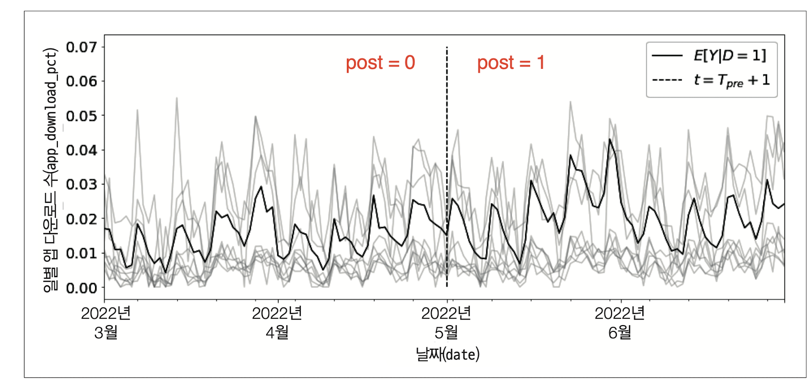
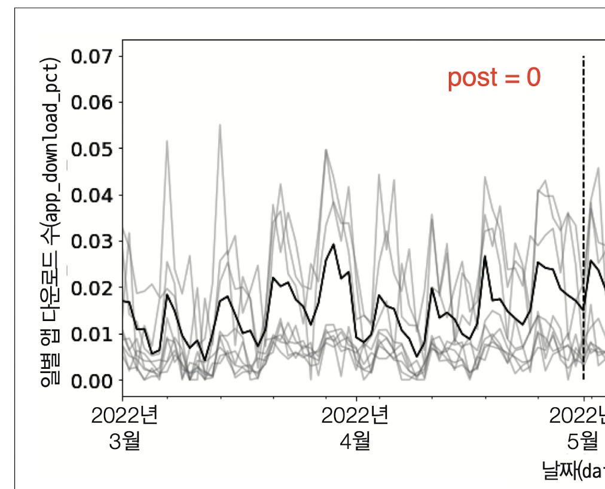
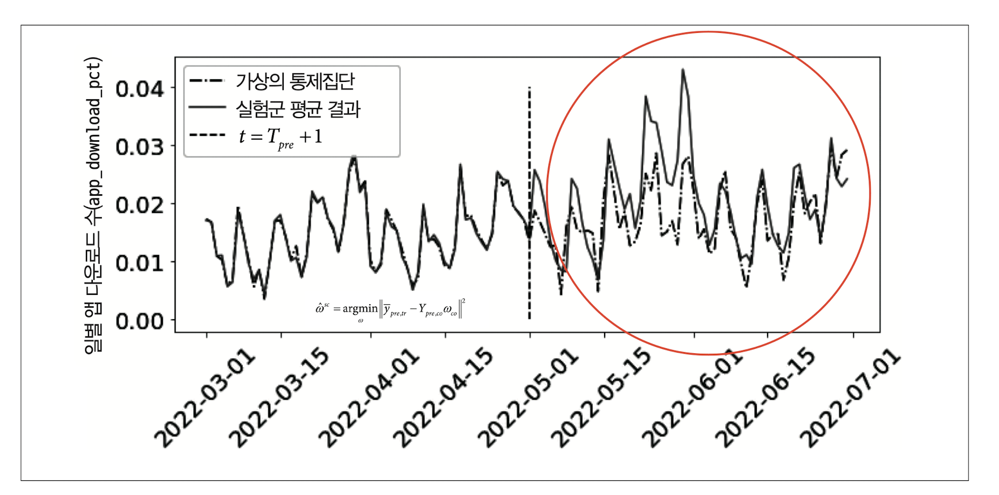
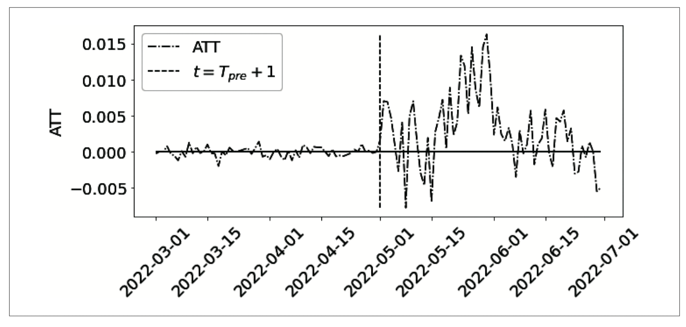
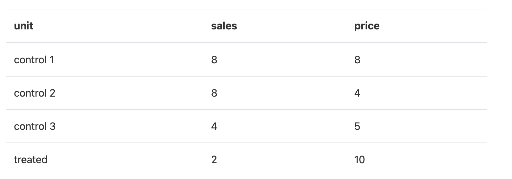
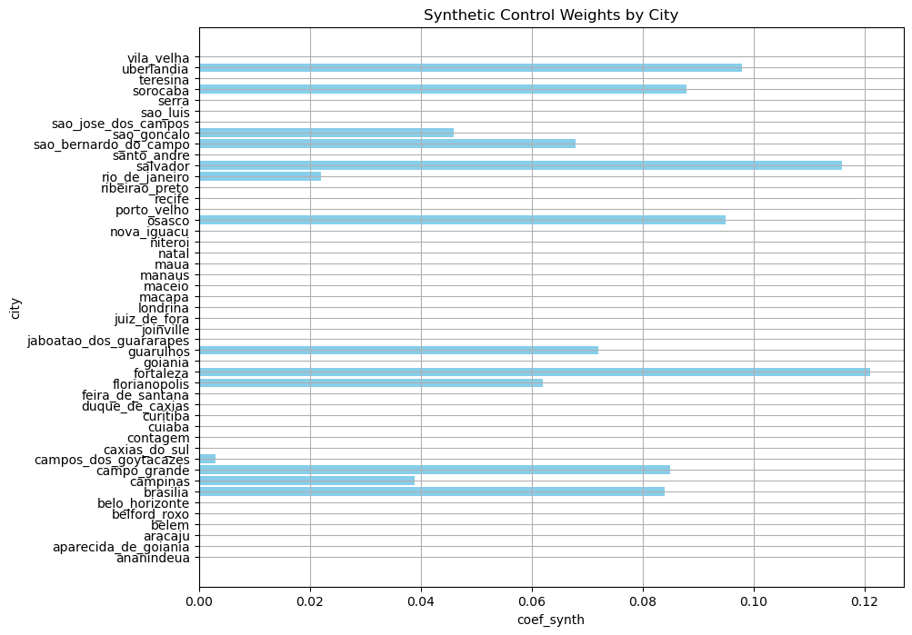
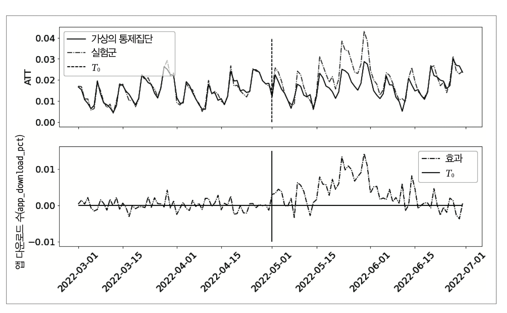

Chapter 9.1 - 9.4 표준통제집단합성법#
작성자: 김상돈
통제 집단 합성법이란?#
가상의 통제 집단을 생성하여 인과 효과를 측정하는 방법
처치가 없을 때의 시험군(\(E[Y_0|D = 1]\))과 비슷한 가상의 대조군(synthetic control)을 만드는 방법
패널 데이터 분석에 널리 활용됨
예제를 통해 문제를 다시 이해해보겠습니다.
온라인 마케팅 데이터셋
app_download(\(Y)\) : 일별 앱 다운로드 수
treated(\(D)\) : 마케팅 캠페인 집행 여부
city : 도시
Population : 도시의 인구
state : 주(보조 정보)
post : 개입 여부(\(I(t > T_{pre})\) )

데이터에 대한 특이 사항으로 treated ==1인 도시는 3개, treated ==0인 도시는 47개로 불균형합니다.
각 도시별 일별 앱 다운로드 수의 시계열 추이를 시각화해보겠습니다. treated ==1인 도시는 3개의 평균 결과(\(E[Y|D = 1]\))은 진한 선이고, 나머지 47개 도시는 연한 회색 선입니다. 5월 1일이 개입을 구분하는 시점입니다.

\(E[Y|D = 1]\)는 증가하는 형태를 보입니다. 단순 추세가 아닌 인과 효과를 계산하기 위해 ATT를 추정해보겠습니다.
\(ATT\)를 계산하기 위해서, \(E[Y \mid D=1, \, \text{Post}=1]\)는 구할 수 있지만, \(E[Y_0 \mid D=1, \, \text{Post}=1]\)는 구할 수 없습니다. 따라서 과거의 정보를 이용하여 \(E[Y_0 \mid D=1, \, \text{Post}=1]\)를 정확히 추정해야 합니다.
이 때 활용할 수 있는 방법이 통제집단합성법입니다.
이중 차분법과 통제집단합성법 비교#
Difference-in-Differences (DID) |
Synthetic Control Method |
|
|---|---|---|
가정 |
평행 트렌드 가정, 처치에 대한 비기대 가정, 파급효과 없음 |
처치에 대한 비기대 가정, 파급효과 없음 |
장점 |
단순성과 직관적인 활용 |
맞춤형 통제 집단, 평행 트렌드 가정 불필요 |
단점 |
평행 트렌드 가정의 민감성, 외생적 사건의 영향 |
복잡성, 데이터 요구 |
적용 시기 |
평행 트렌드 가정 만족시 |
처리 집단과 통제 집단의 경향이 명확히 다를 때 |
가상의 통제집단과 수평 회귀#
통제집단합성법은 개입 이전 기간 정보를 활용하여 모형을 적합한 후, \(E[Y_0|D = 1]\)을 추정하는 것입니다. 즉, 해당 문제를 아래 아래 수식으로 정의할 수 있습니다.
개입 이전 시점의 정보를 활용하여 가중치를 구합니다.
\(\hat{\omega}^{sc}\)를 구하고, 개입 이후 시점의 결과(\(Y_{post, co}\))를 곱하면 \(E[Y_0|D = 1, Post = 1]\)를 추정할 수 있습니다. 수식의 꼴이 선형회귀모형에서 회귀계수를 구하는 수식과 유사하죠? 예시를 위해 선형회귀모형을 통해 통제집단합성법을 이해해보겠습니다.
y_pre_co : 5월 1일 이전 시점의 treat ==0인 47개 주의 일별 앱 다운로드 수
y_pre_tr : 5월 1일 이전 시점의 treat ==1인 3개 주의 일별 앱 다운로드 수 평균

개입 이전 시점의 정보를 활용하여 선형회귀모형을 적합하겠습니다.
from sklearn.linear_model import LinearRegression
model = LinearRegression(fit_intercept=False)
model.fit(y_pre_co, y_pre_tr.mean(axis=1))
# extract the weights
weights_lr = model.coef_
weights_lr.round(3)
array([-0.65 , -0.058, -0.239, 0.971, 0.03 , -0.204, 0.007, 0.095,
0.102, 0.106, 0.074, 0.079, 0.032, -0.5 , -0.041, -0.154,
-0.014, 0.132, 0.115, 0.094, 0.151, -0.058, -0.353, 0.049,
-0.476, -0.11 , 0.158, -0.002, 0.036, -0.129, -0.066, 0.024,
-0.047, 0.089, -0.057, 0.429, 0.23 , -0.086, 0.098, 0.351,
-0.128, 0.128, -0.205, 0.088, 0.147, 0.555, 0.229])
개입 이전 정보를 활용하여 \(\hat{\omega}^{sc}\)를 구했으므로, 5월 1일 이후 시점(post = 1)의 \(E[Y_0|D = 1, Post = 1]\)를 추정할 수 있습니다. Post = 0, Post =1인 전체 시점의 시계열 추이를 그리면 다음과 같습니다.

그림을 통해 보면 대체로 \(E[Y \mid D=1, \, \text{Post}=1] > \hat{E}[Y_0 \mid D=1, \, \text{Post}=1]\)이므로, 온라인 마케팅 캠페인은 긍정적인 효과를 가져왔음을 알 수 있습니다. ATT 추정 결과를 시각화해보겠습니다.

효과가 점진적으로 증가하다가, 점차 감소하는 것을 확인할 수 있습니다. 광고 효과가 나타나기까지 시간이 걸리므로 이러한 점진적 증가가 종종 관측됩니다. 마케팅에서는 novelty effect라고 표현합니다.
개입 이전 시점의 잔차가 매우 작은 것을 확인할 수 있습니다. 이는 선형회귀모형의 과적합이 의심되며, \(\hat{E}[Y \mid D=1, \, \text{Post}=1] > \hat{E}[Y_0 \mid D=1, \, \text{Post}=1]\) 결과를 신뢰할 수 없게 됩니다.
보통 통제집단합성법에서는 단순한 선형회귀모형보다는 제약조건을 추가하여 활용합니다.
표준 가상의 통제집단#
표준 가상의 통제집단 공식은 다음과 같은 제약 조건을 추가합니다.
QP programming
원래의 QP 문제를 다음과 같이 변환할 수 있습니다:
\[ \hat{\omega}^{sc} = \arg\min_{\omega} \left\| \bar{Y}{pre,tr} - Y{pre,co} \omega_{co} \right\|^2 \]제약 조건:
\[\begin{split} C\omega = d \quad \text{where} \quad C = [1, 1, \ldots, 1], \quad d = 1 \\ A\omega \leq b \quad \text{where} \quad A = -I, \quad b = 0 \end{split}\]따라서, 최종 형태는 다음과 같습니다:
\[ \hat{\omega}^{sc} = \arg\min_{\omega} \left\| \bar{Y}{pre,tr} - Y{pre,co} \omega_{co} \right\|^2 \quad \text{s.t.} \quad C\omega = d \quad \text{and} \quad A\omega \leq b \]이 형태는 일반적인 Quadratic Programming 문제의 형태를 충족합니다.
제약 조건을 추가하는 이유는 첫 번째로, 외삽을 방지함으로써 과적합을 방지합니다(아래 그림 참고).

https://causalinferencelab.github.io/Causal-Inference-with-Python/15-Synthetic-Control.html
예를 들어, control 1에는 가중치 2.25를 곱하고, control 2에는 가중치 -2를 곱한다고 해보겠습니다. control 2의 경우 음수 가중치를 곱하게 되므로, 매출(sales), 가격(price)는 음수가 됩니다. 매출과 가격은 음수가 될 수 없으므로, 의미 없는 데이터의 영역을 추정하게 됩니다.
두 번째로, 해석 가능성입니다.
제약 조건 1: \(\sum_i \omega_i = 1\)
제약 조건 2 : \(\omega_i >0\)
제약 조건을 설정할 경우 \(\hat{E}[Y \mid D=1, \, \text{Post}=1] > \hat{E}[Y_0 \mid D=1, \, \text{Post}=1]\)를 추정하는데 중요하지 않은 가중치 대부분은 0이 됩니다. 또한, 가중치의 합이 1이므로, 가상의 통제집단을 생성하는데 필요한 각 단위들의 기여도 관점에서 해석해볼 수 있습니다.

제약식이 존재하는 QP 프로그래밍이므로, 파이썬에 구현된 최적화 패키지인 cvxpy를 활용하여 \(\hat{\omega}^{sc}\) 를 구해보겠습니다.
model = SyntheticControl()
model.fit(y_pre_co, y_pre_tr.mean(axis=1))
# extrac the weights
model.w_.round(3)
array([-0. , -0. , 0. , -0. , -0. , -0. , 0.084, 0.039,
0.085, 0.003, -0. , -0. , -0. , -0. , -0. , 0. ,
0.062, 0.121, -0. , 0.072, -0. , 0. , -0. , 0. ,
-0. , -0. , 0. , -0. , -0. , 0. , -0. , 0.095,
0. , -0. , 0. , 0.022, 0.116, -0. , 0.068, 0.046,
-0. , -0. , -0. , 0.088, 0. , 0.098, -0. ])
가중치 \(\hat{\omega}^{sc}\)는 모두 0 이상인 것을 확인할 수 있습니다. 가중치를 구했으므로, \(\hat{E}[Y \mid D=1, \, \text{Post}=1] > \hat{E}[Y_0 \mid D=1, \, \text{Post}=1]\)와 ATT를 시각화해보겠습니다.

ATT의 경우 제약식이 없는 선형회귀모형을 적합했을 때에 비해 개입 전 모델의 잔차는 커졌지만, ATT는 추세는 이전과 비슷하지만 잡음이 줄어든 것을 확인할 수 있습니다. 즉, 과적합을 방지함으로써 일반화 성능이 더 높아진 것을 확인할 수 있습니다.